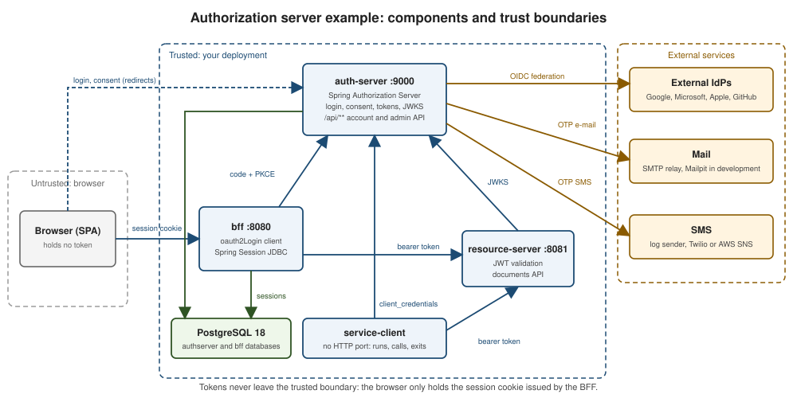

Authorization Server from Scratch: Architecture
|
This content was generated with the assistance of AI and should be verified against the official documentation before being relied on in production. |
This page is the map of the example that the rest of the Authorization Server from Scratch guide builds on: irurueta-auth-server. It shows which applications exist, who talks to whom and across which trust boundary, how a user signs in end to end, how the authorization server’s Spring Security filter chains are split, and how a new authentication method plugs in without editing shared files.
The example is a learning project: it is built and tested in CI, but it is never deployed, so every address, port and credential in these pages is a local development value. The protocol background lives in the OAuth Reference; this guide is its Spring Boot counterpart, in the same way that Spring Boot and OAuth: Integration Overview maps each OAuth role to a Spring Boot starter, and Browser-Based Apps explains why the browser holds a cookie and never a token.
Components and ports
Four applications and a handful of infrastructure services make up the system. The browser is the only untrusted party: it talks to the BFF with a session cookie and to the authorization server through redirects, and it never sees an access, refresh or ID token. The external services (identity providers, mail, SMS) are only ever called by the authorization server.

| Module | Port | Role |
|---|---|---|
|
9000 |
Spring Authorization Server: the OAuth 2.1 and OpenID Connect protocol endpoints, the Thymeleaf login, consent and
logout pages, the account and administration REST API, the signing keys and the JWKS endpoint. Its state lives in the
|
|
8080 |
Backend for frontend: an |
|
8081 |
Validates the bearer JWTs issued by the authorization server (signature through its JWKS, issuer, expiry and |
|
none |
A command-line style application with no HTTP port. It obtains a token with the client credentials grant, calls the resource server and exits. Its other profiles (device flow, token exchange) belong to later pages. |
PostgreSQL 18 |
5432 in the container |
Started from the root |
Mailpit |
1025 (SMTP), 8025 (web UI) |
Local stand-in for the mail relay that receives the verification and one-time-code e-mails. |
|
none |
Root modules outside the applications: the shared Testcontainers base, the Playwright sign-in smoke test and the aggregated JaCoCo report. |
Each application is a Maven sub-reactor split by hexagonal layer (domain, application, infrastructure/<adapter>,
api/<adapter> and a boot composition root). The layering is enforced twice, by maven-enforcer-plugin
bannedDependencies rules in each pom.xml and by an ArchUnit test in each boot module. See
Architectural Patterns for the pattern in general.
End-to-end sign-in
The sequence below is the sign-in of a single-page application through the BFF, the flow recommended for
browser-based apps. Every step is implemented by the example’s code: the /bff/login endpoint starts the
/oauth2/authorization/bff redirect, Spring Security’s oauth2Login() completes the code exchange at
/login/oauth2/code/bff, and the access token only ever travels from the BFF to the resource server.
The authorization code, the PKCE verifier and the tokens are the standard messages of the OAuth 2.1 draft; the one design decision specific to the BFF pattern is steps 12 and 13, where the session cookie replaces the token in the browser. The page Authorization Code and PKCE explains each parameter.
The authorization server’s filter chains
auth-server defines three SecurityFilterChain beans, evaluated in @Order order, and the first chain whose matcher
accepts the request handles it:
-
ApiSecurityConfig(order 0) secures/api/**statelessly. It accepts only bearer JWTs issued by this server for the API audience, with a decoder of its own, keeps registration, e-mail verification and password reset public (rate limited) and requires the scopeadminunder/api/admin/**. -
The protocol chain of
SecurityConfig(order 1) applies only to the authorization server endpoints (/oauth2/authorize,/oauth2/token,/oauth2/jwks, the OpenID Connect discovery and logout endpoints and the rest), enables OpenID Connect, hands the configurer to everyProtocolChainCustomizerbean and redirects an unauthenticated user to the login page. -
The login and UI chain of
SecurityConfig(order 2) has no matcher, so it catches everything else: the login page, the consent page, the account pages and the error page. It enables form login, applies everyLoginChainCustomizerbean and only then adds its catch-all rule.
The two chains of SecurityConfig are the heart of the server. The protocol chain takes its matcher from the
authorization server configurer, so it never needs a list of endpoint paths; the login chain deliberately lets the
customizers run before its anyRequest().authenticated() rule, so a customizer can still permit its own endpoints.
/**
* Creates the chain of the OAuth 2.1 and OpenID Connect protocol endpoints.
*
* @param http security builder.
* @param customizers protocol customizers, applied in order.
* @return the protocol filter chain.
* @throws Exception if the chain cannot be built.
*/
@Bean
@Order(1)
public SecurityFilterChain authorizationServerSecurityFilterChain(
final HttpSecurity http, final ObjectProvider<ProtocolChainCustomizer> customizers) throws Exception {
http
.oauth2AuthorizationServer(server -> {
http.securityMatcher(server.getEndpointsMatcher());
server.oidc(Customizer.withDefaults());
customizers.orderedStream().forEach(customizer -> customizer.customize(server));
})
.authorizeHttpRequests(authorize -> authorize.anyRequest().authenticated())
.exceptionHandling(exceptions -> exceptions
.authenticationEntryPoint(new LoginUrlAuthenticationEntryPoint(LOGIN_PATH)));
return http.build();
}
/**
* Creates the chain of the login page and the rest of the user interface.
*
* @param http security builder.
* @param customizers login method customizers, applied in order.
* @return the login/UI filter chain.
* @throws Exception if the chain cannot be built.
*/
@Bean
@Order(2)
public SecurityFilterChain loginSecurityFilterChain(
final HttpSecurity http, final ObjectProvider<LoginChainCustomizer> customizers) throws Exception {
http.formLogin(form -> form.loginPage(LOGIN_PATH).permitAll());
// customizers run before the catch-all rule below, so they can still permit their own endpoints
for (final var customizer : customizers.orderedStream().toList()) {
customizer.customize(http);
}
http.authorizeHttpRequests(authorize -> authorize
.requestMatchers(LOGIN_PATH, "/error", "/actuator/health/**", "/v3/api-docs/**").permitAll()
.anyRequest().authenticated());
return http.build();
}This code derives from the Spring Authorization Server Getting Started guide, which defines the same two-chain layout for the protocol endpoints and the login page.
The remaining services are plain Spring Security resource servers and an oauth2Login() client. The general model
that all of these chains plug into, including how FilterChainProxy picks a chain by matcher and order, is described
in Spring Security Servlet Architecture,
and the role of the authorization server in the larger picture in
the Spring Authorization Server overview.
Package per feature and the extension points
Inside each layer the code is grouped by feature, and a feature uses the same package name in every layer it spans:
password is ...domain.password, ...application.password, ...infrastructure.persistence.password and
...api.web.password; passkeys, ott, social, x509, mfa, clients and keys follow the same rule. Two
developers adding two authentication methods therefore touch disjoint packages. The shared files are closed for
modification and open for extension through a small number of interfaces in api.web:
| Extension point | What it does |
|---|---|
|
A functional interface over |
|
Contributes one Thymeleaf fragment to the login page ( |
|
The same idea for the protocol chain: every bean receives the authorization server configurer, for example to configure the UserInfo mapper. |
A feature that adds a sign-in method ships one bean of each of the first two kinds. Passkeys declare their
LoginChainCustomizer in a configuration class, with an explicit order so it runs after the TOTP customizer:
/**
* Declares the customizer that enables {@code http.webAuthn(...)}, permits its public endpoints, keeps the
* registration endpoints behind the multi-factor policy and removes the ones that would bypass the step-up. It is
* applied after the TOTP customizer.
*
* @param properties relying party settings.
* @param authorizationManager applies the multi-factor policy.
* @param userDetailsService loads the account of the user a passkey belongs to.
* @param userResolver resolves the account of the signed-in user, for the lockout check.
* @param lockoutUseCase tells whether the second factor of a user is locked.
* @return the customizer.
*/
@Bean
@Order(PasskeyChainCustomizer.ORDER)
public LoginChainCustomizer passkeyChainCustomizer(final PasskeyProperties properties,
final MfaAuthorizationManager authorizationManager, final UserDetailsService userDetailsService,
final SecondFactorUserResolver userResolver, final CheckSecondFactorLockoutUseCase lockoutUseCase) {
return new PasskeyChainCustomizer(properties, authorizationManager, userDetailsService, userResolver,
lockoutUseCase);
}This derives from the Spring Security passkeys documentation, whose http.webAuthn(...) configuration the customizer applies.
Signing in with an X.509 client certificate contributes its button to the login page with a
LoginMethodFragment; its ORDER constant places it after the social sign-in and before the one-time tokens:
/**
* Contributes the sign-in with a client certificate to the login page: a form with one button that posts, with the
* CSRF token, to {@code POST /login/x509}. The template reads {@link #action()} through this bean, because where the
* form posts depends on the transport:
* <ul>
* <li>with a proxy that forwards the certificate, the proxy fronts the whole application, so the form posts to the
* relative path, on the origin of the page;</li>
* <li>with only the dedicated TLS port, the certificate is requested by that port alone, so a page served on any
* other port posts to the same host on that port over {@code https}; a page already served on that port posts to
* the relative path.</li>
* </ul>
* The session cookie and the CSRF token stay valid on the other port (cookies belong to a host, not to a port), but a
* browser only sends a cookie with a {@code SameSite} restriction on a post between pages of the same site, and it
* counts {@code http} and {@code https} as different sites: the main port must be served over {@code https} too, or
* the login page must be opened on the TLS port. The bean only exists while the sign-in with a certificate is enabled.
*/
public class X509LoginMethodFragment implements LoginMethodFragment {
/** Position of the certificate sign-in in the login page: after the social one, before the one-time tokens. */
public static final int ORDER = 260;
/** Scheme of the dedicated TLS port. */
private static final String HTTPS = "https";
/** Settings, which tell the transports and the TLS port. */
private final X509Properties properties;
/**
* Creates the fragment.
*
* @param properties settings of the sign-in with a certificate.
*/
public X509LoginMethodFragment(final X509Properties properties) {
this.properties = properties;
}
/**
* Gets the template that holds the fragment.
*
* @return {@code login-x509}.
*/
@Override
public String templateName() {
return "login-x509";
}
/**
* Gets the fragment of the template.
*
* @return {@code login}.
*/
@Override
public String fragmentName() {
return "login";
}
/**
* Gets the position of the fragment.
*
* @return {@link #ORDER}.
*/
@Override
public int order() {
return ORDER;
}
/**
* Gets the address the form of the page being rendered posts to.
*
* @return the address of the sign-in request for the current request; the relative path when there is none.
*/
public String action() {
if (RequestContextHolder.getRequestAttributes() instanceof final ServletRequestAttributes attributes) {
return action(attributes.getRequest());
}
return X509ChainCustomizer.LOGIN_PATH;
}
/**
* Gets the address the form of a page posts to.
*
* @param request the request of the page.
* @return the relative path (with the context path) when a proxy forwards the certificate, when there is no TLS
* port or when the page is served on it; otherwise the absolute address on the TLS port of the same host.
*/
public String action(final HttpServletRequest request) {
final var path = request.getContextPath() + X509ChainCustomizer.LOGIN_PATH;
if (properties.forwardedEnabled() || !properties.tlsEnabled()
|| request.getLocalPort() == properties.port()) {
return path;
}
return UriComponentsBuilder.newInstance().scheme(HTTPS).host(request.getServerName())
.port(properties.port()).path(path).toUriString();
}
}This derives from the Spring Security X.509 authentication documentation, which describes the certificate sign-in that the fragment’s form posts to.
The later pages of the guide add each authentication method as exactly this pair of beans, so reading these two listings once is enough to follow all of them.